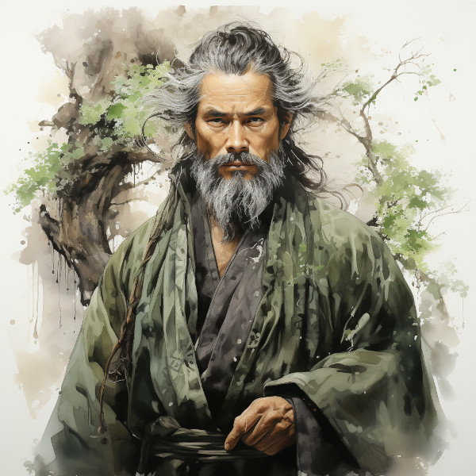

Figure 1: Valandur
Hailing from a lineage of distinguished Hallashim loremasters, Valandur is remembered for his extensive voyages across Naurrnen, accumulating vast wisdom and comprehending the soul of art and written word.
Role in Naurrnen’s Lore: Valandur, as the guardian of Laurië Citime’s spirit, established its foundational principles. His writings, reminiscent of ancient wisdom-filled analects, guide generations in understanding the intrinsic value of handcrafted arts and literature. While details of his debates with early leaders and scholars might be obscured by time, his influence remains evident in the hand-preserved arts of Laurië Citime.
Mystique: Whispers suggest a secret chamber within Laurië Citime, curated by Valandur, safeguarding his invaluable discoveries and creations, awaiting the chosen one to unearth.
In Amearan ruins, silent and grand, Valandur sought to understand. Why did they stand, untouched by time, While all else crumbled, lost its rhyme?
“Their essence true, captured in stone, A testament to a world unknown. But ink and quill can do the same, Preserve a world, give it a name.”
In Laurië’s halls, he set his task, For in handcraft, truth does unmask. Echoes of Ameara in each scroll, Valandur’s quest, to mend the soul.